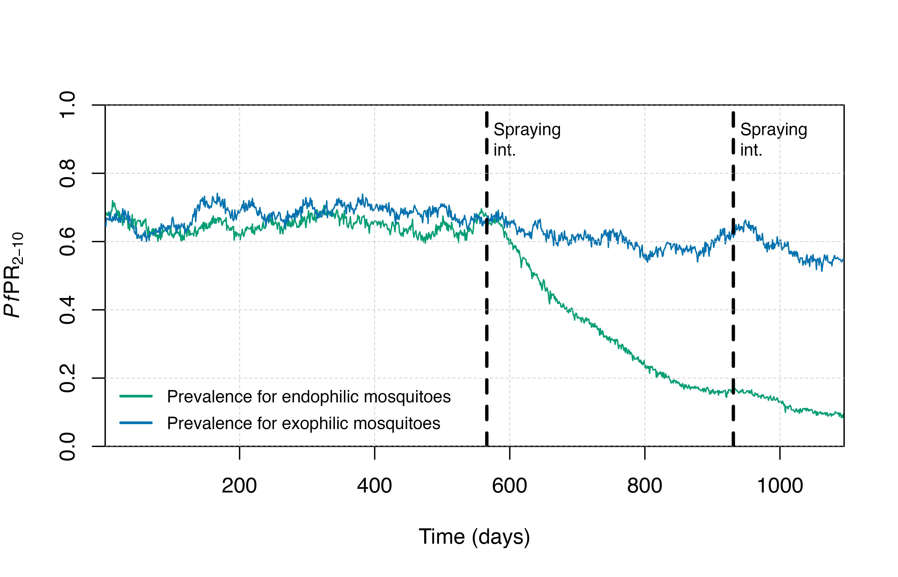
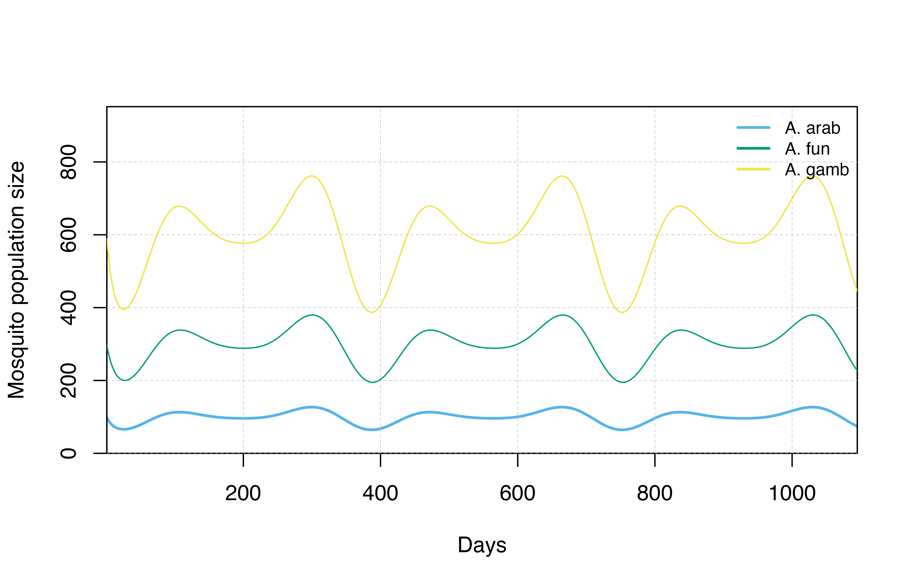

SetSpecies.Rmd
# Load the requisite packages:
library(malariasimulation)
# Set colour palette:
cols <- c("#E69F00", "#56B4E9", "#009E73", "#F0E442", "#0072B2", "#D55E00", "#CC79A7")As alluded to in the Model Structure, Vector Control: IRS, and Vector
Control: Bed net vignettes, it is possible to account for varying
proportions of mosquito species in the setting you are modelling using
the set_species() function. IRS and bed nets could be
expected to have different impacts depending on the proportion of each
mosquito species because of variations in indoor resting, insecticide
resistance, and proportion of bites on humans versus animals by species.
If you have specified more than 1 species, then the arguments for
set_spraying() and/or set_bednets() must be
populated with values for each species at each timestep that the
intervention is implemented.
There are preset parameters for An. gambiae, An.
arabiensis, An. funestus and An. stephensi that
can be set by the helper objects gamb_params,
arab_params, fun_params and
steph_params, respectively. The default values for each
species in these helper functions are from Sherrard-Smith et al.,
2018. The parameters are:
species: the mosquito species name or signifierblood_meal_rates: the blood meal rates for each
speciesforaging_time: time spent taking blood mealsQ0: proportion of blood meals taken on humansphi_bednets: proportion of bites taken in bedphi_indoors: proportion of bites taken indoorsWe will demonstrate how to specify different mosquito species and how this could alter intervention impact using an example with IRS.
We will create a plotting function to visualise the output.
# Plotting functions
plot_prev <- function() {
plot(x = output_endophilic$timestep, y = output_endophilic$n_detect_lm_730_3650 / output_endophilic$n_age_730_3650,
type = "l", col = cols[3], lwd = 1,
xlab = "Time (days)", ylab = expression(paste(italic(Pf),"PR"[2-10])),
xaxs = "i", yaxs = "i", ylim = c(0,1))
lines(x = output_exophilic$timestep, y = output_exophilic$n_detect_lm_730_3650 / output_exophilic$n_age_730_3650,
col = cols[5], lwd = 1)
abline(v = sprayingtimesteps, lty = 2, lwd = 2.5, col = "black")
text(x = sprayingtimesteps + 10, y = 0.9, labels = "Spraying\nint.", adj = 0, cex = 0.8)
grid(lty = 2, col = "grey80", lwd = 0.5)
legend("bottomleft", box.lty = 0,
legend = c("Prevalence for endophilic mosquitoes", "Prevalence for exophilic mosquitoes"),
col = c(cols[3], cols[5]), lty = c(1,1), lwd = 2, cex = 0.8, y.intersp = 1.3)
}
species_plot <- function(Mos_pops){
plot(x = Mos_pops[,1], y = Mos_pops[,2], type = "l", col = cols[2],
ylim = c(0,max(Mos_pops[,-1]*1.25)), ylab = "Mosquito population size", xlab = "Days",
xaxs = "i", yaxs = "i", lwd = 2)
grid(lty = 2, col = "grey80", lwd = 0.5)
sapply(3:4, function(x){
points(x = Mos_pops[,1], y = Mos_pops[,x], type = "l", col = cols[x])})
legend("topright", legend = c("A. arab","A. fun","A. gamb"),
col = cols[-1], lty = 1, lwd = 2, ncol = 1, cex = 0.8, bty = "n")
}Use the get_parameters() function to generate a list of
parameters, accepting most of the default values, but modifying
seasonality values to model a seasonal setting. We will use
set_species to model mosquitoes similar to An.
funestus but with a higher propensity to bite indoors (which we
will name “endophilic”). Then, we use the set_equilibrium()
function to to initialise the model at a given entomological inoculation
rate (EIR).
We used the set_spraying() function to set an IRS
intervention. This function takes as arguments the parameter list,
timesteps of spraying, coverage of IRS in the population and a series of
parameters related to the insecticide used in the IRS. The proportion of
mosquitoes dying following entering a hut is dependent on the parameters
ls_theta, the initial efficacy, and ls_gamma,
how it changes over time. The proportion of mosquitoes successfully
feeding is dependent on ks_theta, the initial impact of the
insecticide in IRS, and ks_gamma, how the impact changes
over time. Finally, the proportion of mosquitoes being deterred away
from a sprayed hut depends on ms_theta, the initial impact
of IRS, and ms_gamma, the change in impact over time. See a
more comprehensive explanation in the Supplementary Information of Sherrard-Smith et al.,
2018.
year <- 365
month <- 30
sim_length <- 3 * year
human_population <- 1000
starting_EIR <- 50
simparams <- get_parameters(
list(
human_population = human_population,
# seasonality parameters
model_seasonality = TRUE,
g0 = 0.285277,
g = c(-0.0248801, -0.0529426, -0.0168910),
h = c(-0.0216681, -0.0242904, -0.0073646)
)
)
peak <- peak_season_offset(simparams)
# Create an example mosquito species (named endophilic) with a high value for `phi_indoors`
endophilic_mosquito_params <- fun_params
endophilic_mosquito_params$phi_indoors <- 0.9
endophilic_mosquito_params$species <- 'endophilic'
## Set mosquito species with a high propensity for indoor biting
simparams <- set_species(
simparams,
species = list(endophilic_mosquito_params),
proportions = c(1)
)
sprayingtimesteps <- c(1, 2) * year + peak - 3 * month # There is a round of IRS in the 1st and second year 3 months prior to peak transmission.
simparams <- set_spraying(
simparams,
timesteps = sprayingtimesteps,
coverages = rep(.8, 2), # # Each round covers 80% of the population
# nrows=length(timesteps), ncols=length(species)
ls_theta = matrix(2.025, nrow=length(sprayingtimesteps), ncol=1), # Matrix of mortality parameters per round of IRS and per species
ls_gamma = matrix(-0.009, nrow=length(sprayingtimesteps), ncol=1), # Matrix of mortality parameters per round of IRS and per species
ks_theta = matrix(-2.222, nrow=length(sprayingtimesteps), ncol=1), # Matrix of feeding success parameters per round of IRS and per species
ks_gamma = matrix(0.008, nrow=length(sprayingtimesteps), ncol=1), # Matrix of feeding success parameters per round of IRS and per species
ms_theta = matrix(-1.232, nrow=length(sprayingtimesteps), ncol=1), # Matrix of deterrence parameters per round of IRS and per species
ms_gamma = matrix(-0.009, nrow=length(sprayingtimesteps), ncol=1) # Matrix of deterrence parameters per round of IRS and per species
)
simparams <- set_equilibrium(simparams, starting_EIR)
# Running simulation with IRS
output_endophilic <- run_simulation(timesteps = sim_length, parameters = simparams)We can see below that only the endophilic species is modelled.
simparams$species
#> [1] "endophilic"
simparams$species_proportions
#> [1] 1We will run the same model with IRS as above, but this time with an
example mosquito species similar to An. funestus, but with a
lower propensity to bite indoors (which we will name “exophilic”). Note
that now there are two rows for the ls_theta,
ls_gamma, ks_theta, ks_gamma,
ms_theta, and ms_gamma arguments (rows
represent timesteps where changes occur, columns represent additional
species). See the Vector Control: IRS vignette for more information
about setting IRS with different mosquito species.
# Create an example mosquito species (named exophilic) with a low value for `phi_indoors`
exophilic_mosquito_params <- fun_params
exophilic_mosquito_params$phi_indoors <- 0.2
exophilic_mosquito_params$species <- 'exophilic'
## Set mosquito species with a low propensity for indoor biting
simparams <- set_species(
simparams,
species = list(exophilic_mosquito_params),
proportions = c(1)
)
peak <- peak_season_offset(simparams)
sprayingtimesteps <- c(1, 2) * year + peak - 3 * month # There is a round of IRS in the 1st and second year 3 months prior to peak transmission.
simparams <- set_spraying(
simparams,
timesteps = sprayingtimesteps,
coverages = rep(.8, 2), # # Each round covers 80% of the population
# nrows=length(timesteps), ncols=length(species)
ls_theta = matrix(2.025, nrow=length(sprayingtimesteps), ncol=1), # Matrix of mortality parameters
ls_gamma = matrix(-0.009, nrow=length(sprayingtimesteps), ncol=1), # Matrix of mortality parameters per round of IRS and per species
ks_theta = matrix(-2.222, nrow=length(sprayingtimesteps), ncol=1), # Matrix of feeding success parameters per round of IRS and per species
ks_gamma = matrix(0.008, nrow=length(sprayingtimesteps), ncol=1), # Matrix of feeding success parameters per round of IRS and per species
ms_theta = matrix(-1.232, nrow=length(sprayingtimesteps), ncol=1), # Matrix of deterrence parameters per round of IRS and per species
ms_gamma = matrix(-0.009, nrow=length(sprayingtimesteps), ncol=1) # Matrix of deterrence parameters per round of IRS and per species
)
output_exophilic <- run_simulation(timesteps = sim_length, parameters = simparams)In the plot below, we can see that IRS is much more effective when the endophilic mosquito species is modelled compared to the scenario where an exophilic species is modelled. In this case, IRS will not be as effective because a larger proportion of bites take place outside of the home.
plot_prev()
Finally, we give an example of how to set multiple mosquito species.
# Update parameter list with species distributions
simparams <- get_parameters(
list(
human_population = human_population,
# seasonality parameters
model_seasonality = TRUE,
g0 = 0.285277,
g = c(-0.0248801, -0.0529426, -0.0168910),
h = c(-0.0216681, -0.0242904, -0.0073646)
)
)
params_species <- set_species(parameters = simparams,
species = list(arab_params, fun_params, gamb_params),
proportions = c(0.1,0.3,0.6))
# Run simulation
species_simulation <- run_simulation(timesteps = sim_length, parameters = params_species)
## Plot species distributions
Mos_sp_dist_sim <- species_simulation[,c("timestep", "total_M_arab", "total_M_fun", "total_M_gamb")]
species_plot(Mos_sp_dist_sim)